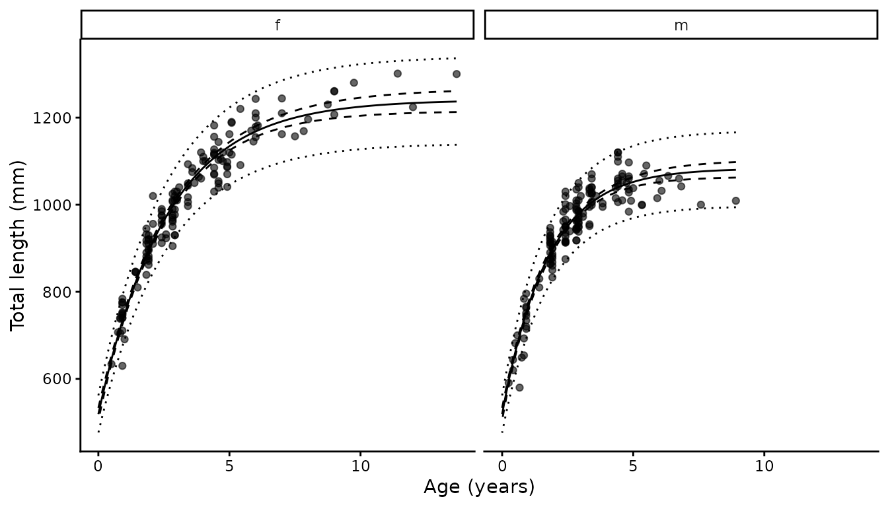

Growth analysis
growth.RmdBackground
Growth is usually described with a von Bertalanffy function, and
usually parameterised by
,
and
.
The third parameter is the hypothetical age at zero length, which has no
biological meaning and is often estimated at implausible values when
there are few young animals in the sample. growth() uses
the reparameterisation of Harry et al. (2019), replacing
with length at birth:
is interpretable, can be measured directly, and anchors the curve at the left-hand end where age data are usually weakest. and are estimated separately for each group, typically sex, while is shared.
Observed length is normally distributed about the curve with a standard deviation proportional to expected length, , following Cope and Punt (2007). Individual variability in length at age therefore grows with size, which is what length at age data normally look like.
Two further components from Harry et al. (2019) are optional, and can be used independently.
Ageing error
Ages read from vertebrae are estimates, not measurements. Treating them as exact biases growth estimates: the usual consequence is that comes out too high and too low, because reading error flattens the apparent relationship at the top end. The model treats true age as a random effect, with each reading an observation of it:
The ageing CV is computed outside the likelihood from replicate readings, following Chang (1982), and held fixed.
Neonates
Animals with an unhealed umbilical scar are known to be age zero. Their lengths are direct information on :
These are often available in numbers, and from animals that were never aged, so they add information at no cost.
Fitting is by maximum likelihood with RTMB, the random
effects integrated out by the Laplace approximation. Confidence
intervals on the curve come from the delta method; prediction intervals
add
.
This is a port of the TMB implementation used in Harry
et al. (2019), and reproduces the published estimates for
Carcharhinus limbatus to within rounding:
263.3 and 241.9 cm,
0.1418 and 0.1565,
72.77 cm and
0.0487.
Basic usage
library(mustelus)
data(spottail)
g <- growth(length, age_agree, sex, data = spottail,
neonate = umb_scar %in% c("y", "p"))
summary(g)
#> # A tibble: 2 × 17
#> group Linf Linf_lower Linf_upper K K_lower K_upper L0 L0_lower
#> <chr> <dbl> <dbl> <dbl> <dbl> <dbl> <dbl> <dbl> <dbl>
#> 1 f 1241 1215 1266 0.383 0.350 0.415 519. 505.
#> 2 m 1083 1064 1103 0.580 0.526 0.633 519. 505.
#> # ℹ 8 more variables: L0_upper <dbl>, CV_L <dbl>, n <int>, n0 <int>,
#> # cv_age <dbl>, nll <dbl>, AIC <dbl>, convergence <lgl>The summary has one row per group.
and
differ between them;
and
are shared and so repeat. Also reported are the number of aged animals
per group (n), the number of neonates (n0),
the ageing CV if used, the negative log-likelihood, AIC, and whether the
fit converged with a positive-definite Hessian.
Female spot-tail sharks reach a larger asymptotic length than males (1241 against 1083 mm) and grow more slowly toward it (0.38 against 0.58). That pattern, females larger and slower, is common in carcharhinids.
Plotting

The solid line is the fitted curve, the dashed ribbon the 95% confidence interval on it, and the dotted ribbon the 95% prediction interval for individual animals. The prediction interval widens with size, which is the assumption at work.
Length at birth
Supplying neonate flags animals of known age zero. Any
flagged animal that also carries an age is used only for the length at
birth term, not as length at age data: an age-zero observation and a
length at birth observation say exactly the same thing, so counting both
would double the weight. The function reports how many were moved.
g$neonates[[1]]
#> [1] 478 550 545 540 505Here all five neonates were also aged, at exactly age zero, so the two formulations are mathematically identical and removing them changes nothing. Where neonates come from separate sampling, as in Harry et al. (2019), they add genuinely new information, and are frequently the only data available for the smallest sizes.
Ageing error
Where replicate readings exist, pass the columns to
reads and the ageing CV is computed from them.
spottail carries only a consensus age, so for illustration
here are two simulated readings around it:
library(dplyr)
sp <- spottail |>
mutate(reader1 = pmax(0, round(age_agree + rnorm(n(), 0, 0.3), 2)),
reader2 = pmax(0, round(age_agree + rnorm(n(), 0, 0.3), 2)))
g_reads <- growth(length, age_agree, sex, data = sp,
neonate = umb_scar %in% c("y", "p"),
reads = c(reader1, reader2))
summary(g_reads)[, c("group", "Linf", "K", "L0", "cv_age")]
#> # A tibble: 2 × 5
#> group Linf K L0 cv_age
#> <chr> <dbl> <dbl> <dbl> <dbl>
#> 1 f 1241 0.373 525. 0.182
#> 2 m 1078 0.590 525. 0.182If only a consensus age is available but the ageing CV is known from
elsewhere, supply it directly with cv_age. This is the more
common situation when reanalysing published data.
sapply(c(0, 0.05, 0.10, 0.20), function(cv) {
gg <- if (cv == 0) {
growth(length, age_agree, sex, data = spottail,
neonate = umb_scar %in% c("y", "p"))
} else {
growth(length, age_agree, sex, data = spottail,
neonate = umb_scar %in% c("y", "p"), cv_age = cv)
}
c(cv_age = cv, Linf_f = summary(gg)$Linf[1], K_f = summary(gg)$K[1])
}) |> t() |> as.data.frame()
#> cv_age Linf_f K_f
#> 1 0.00 1241 0.3829
#> 2 0.05 1242 0.3806
#> 3 0.10 1246 0.3738
#> 4 0.20 1249 0.3628As the assumed ageing error grows, rises and falls. That is the expected direction: ignoring ageing error makes growth look faster and the asymptote smaller than it is. The size of the shift depends on how much error there is, which is why estimating from replicate readings is worth doing where the readings exist.
With neither reads nor cv_age, age is
treated as measured without error and the model reduces to an ordinary
von Bertalanffy fit.
Output structure
# Fixed-effect estimates and standard errors
summary(g$mods[[1]]$sdreport, "fixed")
#> Estimate Std. Error
#> Linf 1.240716e+03 13.098814452
#> Linf 1.083294e+03 9.814274998
#> K 3.829032e-01 0.016599074
#> K 5.796683e-01 0.027395151
#> L0 5.191611e+02 7.280696262
#> CV_L 3.970768e-02 0.001629402
head(g$preds[[1]])
#> group age len lower upper plower pupper
#> 1 f 0.0000000 519.1611 504.8909 533.4312 476.3104 562.0118
#> 2 f 0.1380505 556.3119 543.9794 568.6445 511.2936 601.3302
#> 3 f 0.2761010 591.5500 580.7770 602.3229 544.2677 638.8322
#> 4 f 0.4141515 624.9737 615.3955 634.5519 575.3997 674.5477
#> 5 f 0.5522020 656.6765 647.9518 665.4012 604.8300 708.5231
#> 6 f 0.6902525 686.7471 678.5738 694.9204 632.6783 740.8159mods holds the RTMB objective function, the
nlminb result and the sdreport. Note that the
objective is an external pointer and will not survive
saveRDS(); the rest of the object is ordinary R data.
References
Chang, W.Y.B. (1982) A statistical method for evaluating the reproducibility of age determination. Canadian Journal of Fisheries and Aquatic Sciences 39(8), 1208–1210. doi:10.1139/f82-158
Cope, J.M. and Punt, A.E. (2007) Admitting ageing error when fitting growth curves: an example using the von Bertalanffy growth function with random effects. Canadian Journal of Fisheries and Aquatic Sciences 64(2), 205–218. doi:10.1139/f06-179
Harry, A.V., Butcher, P.A., Macbeth, W.G., Morgan, J.A.T., Taylor, S.M. and Geraghty, P.T. (2019) Life history of the common blacktip shark, Carcharhinus limbatus, from central eastern Australia and comparative demography of a cryptic shark complex. Marine and Freshwater Research 70(6), 834–848. doi:10.1071/MF18141